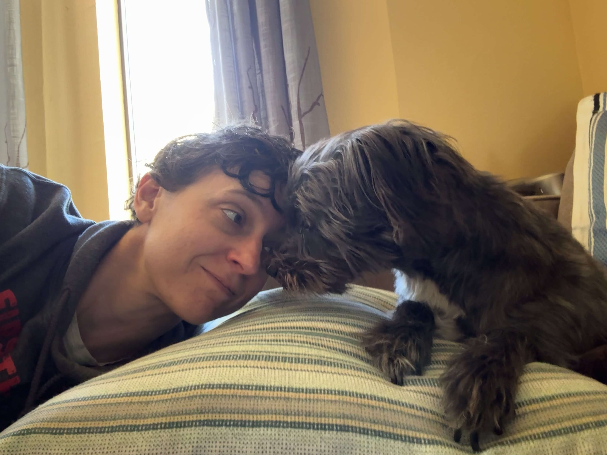

Small World
Walls closing in
When did the world get so small,
And the walls that keep the world out cave in?
Find me a shovel, a winch, and a crowbar
And I'll pry open my inner door to the universe
Jump into that vastness without a parachute
Fall until gravity loses its grip
Where time and space are suspended
Free, unconstrained, ill-defined, maleable
The stars here are free of satellites
Free of orbiting bodies
The sky here is without obstruction
The air here free of sound
How holy the constraints that freed me
